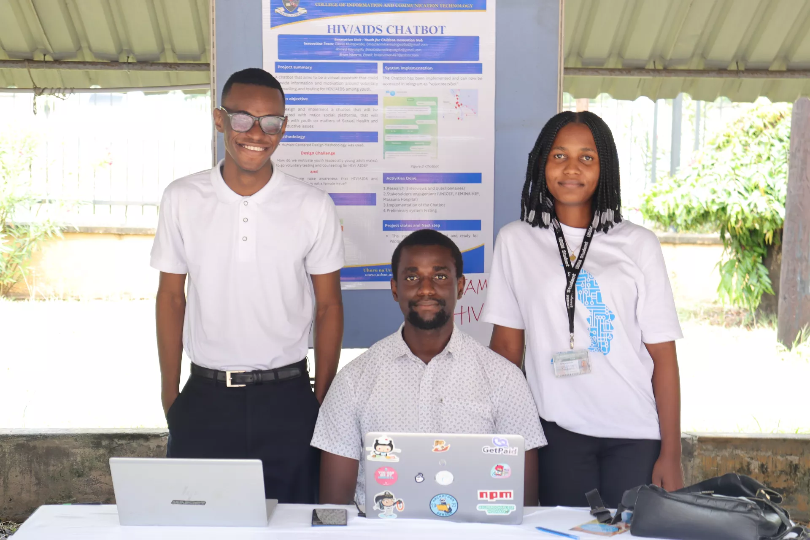
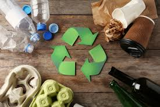

Achieving SDG 9 requires more than just government policy; it demands collective action from students, professionals, and citizens. Your engagement is critical in holding institutions accountable and driving the demand for sustainable solutions. Below are actionable ways you can contribute to resilient infrastructure and inclusive industrialization.
Innovation often starts at the grassroots level. As a student, you possess analytical skills vital for prototyping solutions to community problems, such as localized flood warning systems, or waste management trackers.
The digital divide is a major barrier to innovation. Promoting digital literacy and advocating for wider internet access is directly linked to Target 9.c.
You can influence sustainable industrialization through your consumption choices. Prioritize businesses that use eco-friendly production methods, source locally, and demonstrate ethical labor practices.
